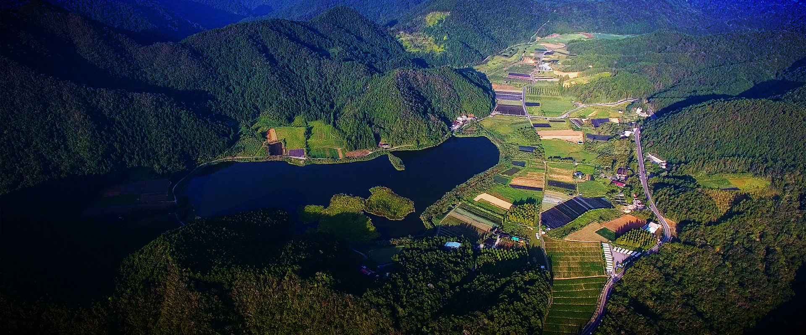
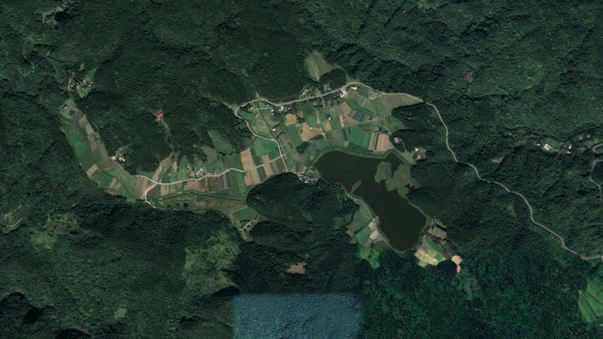
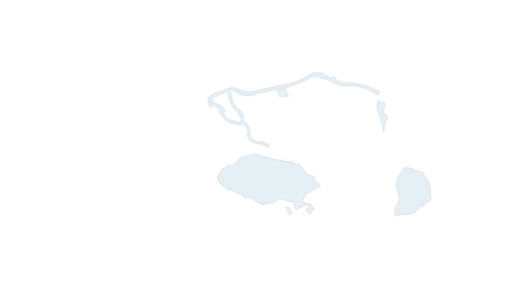
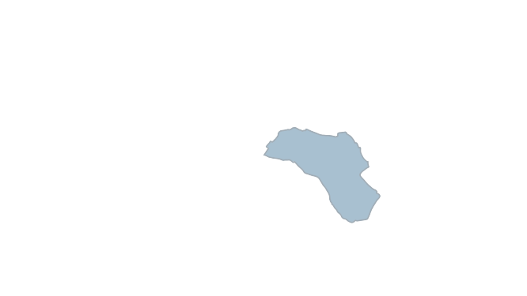

水底 那些看不見的
1987年雙連埤由私人購得，2001年地主以改建雙連埤為魚塭、除去廢水為由，對埤塘進
行大規模改造。怪手開進埤塘，大肆整地、清除底泥，挖走大量的水生植物，浮島上原
有的森林亦不復存在，地主還放養大量的外來魚種吳郭魚吞食水草，造成雙連埤生態嚴
重損毀。
荒野保護協會雙連埤主任黃振福表示，由於當時地主破壞性的開挖埤塘，原本緩坡且透
徹見底的埤塘變深而陡，許多水生植物因無法在陡峭的湖岸紮根已不復見，外來種入侵
也使生物多樣性迅速下降。
由於生態一旦遭受到破壞，回復需要很長的時間，黃朝慶解釋道。他同時指出，生態系
統本身具有自我恢復的能力，在積極保育的情況下，回復到過去70%、80%的狀態是可能
的。
經過荒野保護協會及黃朝慶等保育人士積極的協商及倡議，雙連埤野生動物保護區於2003
年起由行政院農業委員會公告劃設，宜蘭縣政府於2010年完成埤區土地徵收，依照濕地
保育法，雙連埤於2018年劃為國家級重要濕地。
雙連埤野生動物保護區是依據《野生動物保育法》所劃設，旨在棲地的維護及復育、基 礎資料建立及永續經營，雙連埤主要保護的是低海拔濕地生態系統及稀有水生植物。黃 閎義表示，雙連埤生態動性很高，被稱作生態動性的熱點。因此，在資源有限的情況下 ，保護熱點就能用最少資源、最大程度保護物種。
去（2021）年12月，黃振福與工作團隊開始在湖岸進行臺灣特有種水社柳的復育工作。
水社柳是優良的固堤水生木本植物，在春天開出金黃色的花絮，但因分佈地區少，屬國
家瀕絕等級（NE）的珍稀植物。雙連埤水社柳歷經數次的破壞後，數量開始減少。
他們使用扦插的方式進行植物的無性繁殖。黃振福解釋道，扦插是複製，基因並不會改
變，因此需要盡量找不同的植株，且公株和母株的數量需均衡，未來這些植株才有可能
自行透過雌雄的授粉過程進行基因重組，以維持基因多樣性。
黃振福表示，將水社柳種植於岸邊，除固堤外還有一個原因，是希望將來成林後，可以
為復育其他水生植物提供庇護。他說：「由於氣候變遷，過去十年所假設的環境因子，
如氣溫、降雨量，如今都已不適用。」山上溫度變高使復育的工作更加困難。
|
數位專題
深山瑰寶的選擇題
——私有地保育的兩難
深山瑰寶的選擇題
——私有地保育的兩難
|  |
從蘭陽平原，沿著唯一對外交通——省道臺七丁線入山，雙連埤就隱藏在群山之中。雙連埤水域範圍 約17.2公頃，海拔高度約470公尺，是臺灣少有的低海拔天然濕地。由於該地物種豐富珍貴，被列 為國家級重要濕地。谷坡崩壞、沖積與偃塞積水，造就了雙連埤濕地。其因相連的上埤和下埤而得 名，從小在雙連埤長大的居民高國堅回憶說：「早年降雨量大時，兩個埤會匯聚成一個大湖。」 |
|

雙連埤全貌 公有地 私有地 保護區 |
得天獨厚的地理位置造就了這顆被群山環繞的珍珠，它
毗鄰森林、溪流、與農田生態系統，是一個與周邊生態
聯結密切的複合型生態系統。
荒野保護協會自2002年起，於雙連埤開展棲地保育行動
，現任棲地守護部專員的黃閎義表示，由於雙連埤濕地
有水源，周遭生態系統的生物都會來這裡取水。雙連埤
因此成為了動植物們繁衍生息的溫床，長久滋養著這一
帶的生靈。黃閎義分析，雙連埤位於候鳥遷徙路徑上，
他們秋末冬初從西伯利亞然後穿越中國，在臺灣停留繁
衍，待到初春時離開，候鳥遷徙攜帶種子散佈在其遷徙
路徑上，這也是雙連埤物種豐富多樣的原因之一。
|
孕育生態的天然溫床
行政院農業委員會特有生物研究保育中心退休助理研究員黃朝慶表示，全臺大約有三百
多種水生植物，而在雙連埤僅十幾公頃的土地上就紀錄到一百多種，其中十幾種在臺灣
維管束植物紅皮書列為瀕危植物，甚至有2、3種現僅存於雙連埤。他說：「二十幾年前
，雙連埤有很多野菱、石龍尾等水生植物，物種豐富，是水草天堂。」


除豐富的植物資源外，雙連埤還擁有多種多樣的動物資源。黃閎義表示，臺灣原生兩棲
類的青蛙約有30種，在雙連埤可以紀錄到21種，即全臺2/3的蛙種，其中甚至包含翡翠樹
蛙及臺北樹蛙兩種保育類青蛙。臺灣陸生蛇類有50種，黃閎義在雙連埤觀察記錄到的已
達25種。
「山羊、食蟹獴、麝香貓、穿山甲、黃鼠狼、鼬獾，我都在那邊看到過。」黃閎義如數
家珍地介紹著在雙連埤偶遇的動物。由於野生動物資源豐富，雙連埤早期曾是泰雅族重
要的獵場，泰雅族族人抓大放小，為的是其子孫後代有源源不斷的資源。
|